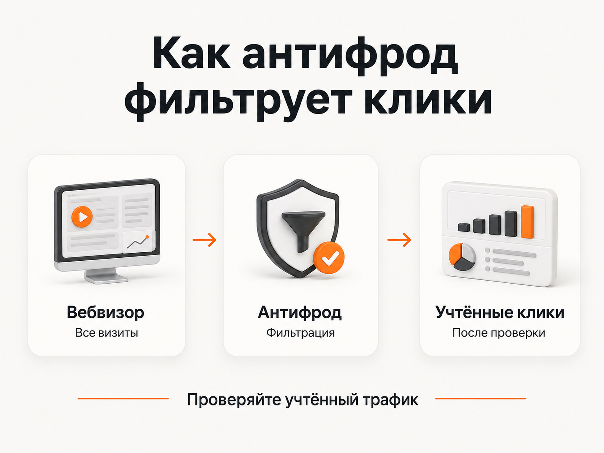
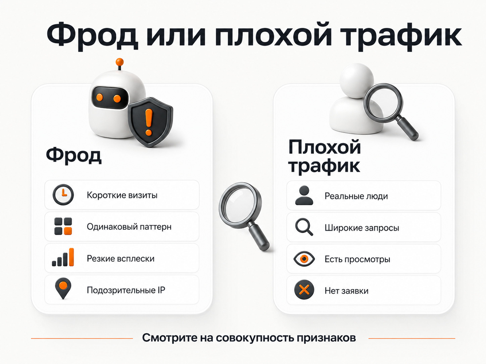
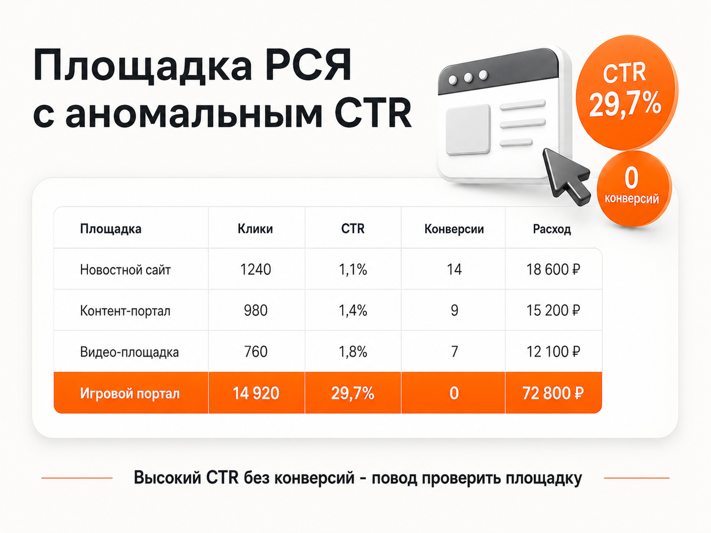

Блог о платном трафике
Скликивание в Яндекс Директе: как определить и защититься
Скликивание в Яндекс Директе существует, но не любой рост расходов или отсутствие заявок означает фрод. Сначала нужно понять, за какие переходы Яндекс списал деньги, откуда пришёл трафик и чем подозрительные визиты отличаются от обычных пользователей.
Очень часто под подозрением оказывается обычный нецелевой трафик, плохая площадка РСЯ или реальные пользователи, которые перешли по объявлению, но ничего не купили.
Особенно остро проблема воспринимается в дорогих нишах, где один переход с поиска может стоить 1000 ₽ и выше. Когда несколько таких кликов подряд не приводят к заявкам, легко решить, что конкуренты специально расходуют рекламный бюджет.
Такое действительно возможно. Но сначала нужно понять, за какие переходы Яндекс фактически списал деньги, откуда пришел трафик и чем подозрительные визиты отличаются от обычных пользователей.
Что Яндекс считает недействительным трафиком
В документации Яндекса используется термин «недействительный трафик». Это клики и другие действия, которые система считает не представляющими реального интереса для рекламодателя.
К нему может относиться преднамеренный фрод, например автоматические клики ботов, а также случайные действия пользователей.
Директ анализирует рекламный трафик автоматически. Если клик признается недействительным, плата за него не должна учитываться. Если система обнаружила фрод уже после списания, Яндекс сообщает, что расходы возвращаются на баланс рекламного счета.
При этом обычный нецелевой посетитель фродом не считается. Человек может увидеть рекламу, перейти на сайт, провести там несколько секунд и уйти. Для бизнеса такой клик мог оказаться бесполезным, но это еще не означает, что переход был искусственным.
Поэтому ситуация «потратили деньги, заявок нет» сама по себе ничего не доказывает.
Могут ли конкуренты специально тратить ваш рекламный бюджет
Да, технически конкурент может несколько раз нажимать на объявления. Особенно очевиден такой сценарий на поиске, где рекламодатели напрямую конкурируют за одну аудиторию.
Проблема в другом: отличить такого человека от потенциального клиента сложно.
Представим дорогую услугу. Пользователь:
- Увидел рекламу и первый раз открыл сайт.
- Через несколько часов вернулся сравнить условия.
- На следующий день посмотрел страницу еще раз.
- Затем обсудил предложение с партнером.
- Только после этого оставил заявку.
Для аналитики это несколько повторных визитов. Но никакого злого умысла здесь нет. Поэтому я никогда не считаю сам факт повторных переходов доказательством атаки. Нужна совокупность аномалий.
Как работает антифрод Яндекс Директа
У Яндекса есть собственная система защиты от недействительного трафика. Она работает на нескольких этапах.
Часть подозрительной активности система может определить еще до перехода пользователя на сайт. Трафик дополнительно анализируется во время клика и после посещения сайта.
Отфильтрованные действия исключаются из рекламной статистики. Фродовые конверсии также не должны использоваться для обучения стратегии.
Официальная справка: антифрод Яндекс Директа.
Отдельно в Директе можно посмотреть отчет по недействительному трафику. Это первое место, куда я бы пошел при подозрениях.
Если система сама показывает заметное количество отфильтрованных событий, значит какая-то подозрительная активность действительно присутствует, но одновременно это означает, что антифрод уже ее обнаруживает.

Почему Вебвизор может вводить в заблуждение
Частая ситуация: владелец бизнеса открывает Вебвизор и видит странные посещения.
Например:
- визиты по 1-3 секунды;
- почти никаких действий на странице;
- несколько похожих заходов подряд;
- странное перемещение курсора;
- серия однотипных посещений.
После этого появляется логичный вывод: «За все эти переходы я заплатил». Но это не обязательно так.
Вебвизор способен отображать визиты, которые антифрод Директа уже признал недействительными. Поэтому наличие записи в Вебвизоре еще не означает, что за этот переход списались деньги. Яндекс рекомендует сопоставлять такие посещения с рекламной статистикой.
Именно поэтому анализировать нужно оплаченный трафик из Директа, а не просто считать количество странных записей в Вебвизоре.
Как отличить фрод от просто плохого трафика
Одного универсального признака нет. Я смотрю на несколько показателей одновременно.
| Что видно в статистике | Что это может означать |
|---|---|
| Много очень коротких визитов без действий | Боты, случайные клики или нецелевой трафик |
| Резкий всплеск переходов в короткий период | Повод проверить источник трафика |
| Однотипное поведение большого числа визитов | Возможная автоматизированная активность |
| Повторные посещения | Как подозрительный трафик, так и реальные клиенты |
| Высокая роботность | Дополнительный сигнал, но не доказательство |
| Нет заявок | Может быть проблема рекламы, сайта или предложения |
| Аномальный CTR отдельной площадки РСЯ | Повод проверить площадку |
| Большой объем переходов с площадки без конверсий | Серьезный повод оценить качество источника |
Главная ошибка здесь - взять один показатель и сделать по нему окончательный вывод.
Например, высокая доля отказов может появиться из-за неудачной посадочной страницы. Нулевая конверсия может быть следствием слишком широких запросов. Повторные визиты характерны для дорогих товаров и услуг.
Чем больше подозрительных признаков совпадает одновременно, тем серьезнее основание разбираться дальше.

Как я проверяю подозрительный трафик на поиске
Если проблема возникла в поисковой кампании, я начинаю не с IP-адресов.
Сначала проверяю отчет по недействительному трафику в Директе, а затем разбираю те переходы, которые система действительно учла.
Смотрю:
- поисковые запросы;
- время переходов;
- расход;
- устройства;
- географию;
- повторные визиты;
- действия пользователей после перехода;
- микро- и макроконверсии.
Очень часто после этого причина становится вполне обычной. Например, кампания начала активно показываться по слишком широким запросам. Пользователи настоящие, но продукт им не нужен. Получается большое количество коротких визитов без заявок, которое внешне выглядит очень похоже на искусственные переходы.
В такой ситуации нужно работать с семантикой и условиями показа, а не искать IP конкурентов. По этой теме у меня есть отдельная статья о минус-фразах в Яндекс Директе.
Некачественные площадки и фрод в РСЯ
В Рекламной сети Яндекса причина подозрительного трафика часто находится на уровне конкретных сайтов или приложений. Я отдельно смотрю площадки с аномальным CTR.
Сам по себе высокий показатель еще ничего не доказывает. Но если площадка получает большой объем показов и кликов, CTR у нее многократно выше остальных источников, а пользователи после перехода практически ничего не делают, это серьезный повод для проверки.
Особенно подозрительно выглядит сочетание: очень высокий CTR + большой объем трафика + отсутствие целевых действий.
Например, CTR 20-30% на заметном объеме переходов при полном отсутствии конверсий я бы точно не оставлял без внимания.
При этом площадку нельзя отключать только потому, что у нее высокий CTR. Сначала нужно посмотреть размер выборки, расходы, поведение пользователей и результат.
В статье «Какой CTR считается хорошим в Яндекс Директ» я отдельно разбираю, почему необычно высокий CTR в РСЯ иногда оказывается признаком проблемного источника.
Для баннерной рекламы Яндекс позволяет исключать отдельные площадки РСЯ. Сейчас лимит составляет до 1000 доменов. Но сам Яндекс предупреждает, что чрезмерная блокировка может сократить полезную аудиторию кампании.
Официальная справка: исключение площадок РСЯ.
Поэтому логика должна быть такой: площадка → объем трафика → CTR → конверсии → качество визитов → решение.

Стоит ли блокировать подозрительные IP-адреса
Такая возможность в Директе есть. Сейчас на уровне кампании можно указать до 25 IP-адресов, для которых показы будут запрещены.
Официальная справка: настройки кампании.
Но я считаю IP-блокировку скорее точечным инструментом, чем полноценной защитой.
Во-первых, IP может быть динамическим. Сегодня человек использует один адрес, завтра другой. Во-вторых, за одним IP могут находиться разные пользователи. Например, сотрудники одной компании или абоненты провайдера.
Получается риск вместе с подозрительным посетителем отключить рекламу людям, которые действительно могли стать клиентами. Сам Яндекс по этой причине не рекомендует использовать запрет по IP как основной способ борьбы с подозрительной активностью.
Официальная справка: исключение IP-адресов.
Я бы блокировал IP только тогда, когда есть конкретная и достаточно хорошо подтвержденная проблема с определенным адресом.
Можно ли полностью исключить тех, кто уже посещал сайт
Еще один вариант защиты - собрать аудиторию посетителей сайта и поставить для нее корректировку -100%.
Технически Директ позволяет полностью исключать показы для выбранных сегментов аудитории.
Официальная справка: корректировки ставок.
На первый взгляд решение отличное: человек один раз перешел по рекламе, после этого повторно ее больше не видит. Значит несколько раз нажимать на объявление он уже не сможет.
Но здесь очень легко потерять нормальных клиентов. Чем дороже и сложнее продукт, тем чаще решение принимается не за один визит. Человек возвращается на сайт второй, третий, четвертый раз. Иногда именно повторное рекламное касание приводит его к заявке.
Если поставить -100% всем посетителям, вместе с потенциальными нарушителями мы отключим нормальную аудиторию.
Поэтому я бы использовал такой подход только при действительно острой проблеме и желательно не для всех посетителей сайта, а для более узкого сегмента с подозрительным поведением.
Есть и технический нюанс: Яндекс указывает, что после попадания пользователя под условие сегмента применение корректировки может занять до 180 минут. То есть защита не обязательно сработает мгновенно.
Платные антифрод-сервисы и базы ботов
Кроме встроенной защиты Яндекса существуют сторонние сервисы для фильтрации рекламного трафика.
Обычно они анализируют посещения сайта, находят признаки автоматизированной активности и формируют сегменты пользователей, которым затем можно запретить повторные показы рекламы.
Некоторые сервисы работают еще и с собственными накопленными базами ботов. Например, BotFAQtor описывает общий сегмент ботов, обнаруженных на сайтах своих клиентов, который объединяется с индивидуальным сегментом рекламодателя. Для полученной аудитории устанавливается корректировка -100% в Яндекс Директе.
Описание механики BotFAQtor.
То есть рекламодатель получает доступ не только к данным, собранным на своем сайте, но и к уже накопленной базе подозрительных пользователей.
Такие сервисы платные, но для кампаний с дорогими кликами их стоимость может быть небольшой по сравнению с рекламным бюджетом.
При этом нужно четко понимать ограничение этого подхода. Подобные базы в первую очередь помогают бороться с ботами и автоматизированным фродом. Если живой человек вручную открывает Яндекс, периодически находит ваше объявление и кликает по нему как обычный пользователь, надежно распознать его значительно сложнее.
Для системы он может выглядеть практически так же, как потенциальный клиент. Поэтому сторонний антифрод я рассматриваю как дополнительный уровень защиты от автоматизированного трафика, а не как способ полностью решить проблему ручных кликов со стороны конкурентов.
Что делать, если подозрения остаются
Если после проверки запросов, площадок и поведения посетителей проблема остается именно среди учтенных Директом переходов, есть смысл обратиться в поддержку Яндекса.
Яндекс просит передать:
- номер объявления;
- период подозрительной активности;
- номер счетчика Метрики;
- ссылки на соответствующие отчеты;
- другие данные, на основании которых возникло подозрение.
Если проверка подтвердит недействительный трафик, расходы должны быть возвращены на основной счет.
Это надежнее, чем пытаться самостоятельно определить нарушителя по нескольким странным визитам.
Как защитить Яндекс Директ от фрода на практике
Я бы действовал в следующем порядке:
- Проверил отчет по недействительному трафику в Директе.
- Сопоставил подозрительные посещения Вебвизора с реально учтенными рекламными кликами.
- На поиске проверил запросы, время, устройства, географию и поведение пользователей.
- В РСЯ разобрал площадки с аномальным CTR и большим объемом бесполезного трафика.
- Исключил явно некачественные площадки.
- Использовал IP-блокировку только для подтвержденных случаев.
- Не ставил -100% всем повторным посетителям без серьезной причины.
- При большом бюджете рассмотрел сторонний антифрод и базы ботов как дополнительный фильтр.
- Если подозрительная активность остается среди оплаченных кликов, передал данные в поддержку Яндекса.
Самое опасное в этой теме - начать защищаться слишком агрессивно.
Можно настолько сильно ограничить аудитории, IP и повторные показы, что потери от собственной защиты окажутся выше возможного ущерба от фрода.
Поэтому сначала я определяю, действительно ли проблема существует и откуда она идет. Только после этого решаю, что именно нужно отключать.
Если требуется более широкая проверка кампаний, причины перерасхода бюджета я также разбираю в статье «Аудит Яндекс Директ: что проверить и как найти проблемы в рекламе».
Описание моего подхода к настройке и ведению рекламы и примеры проектов собраны на главной странице naklikay.ru.